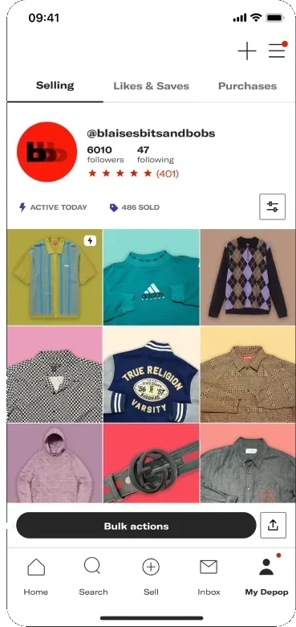
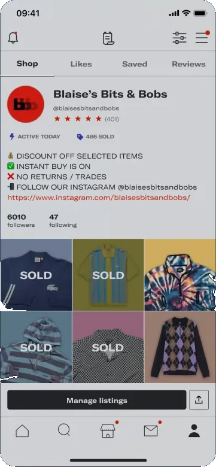
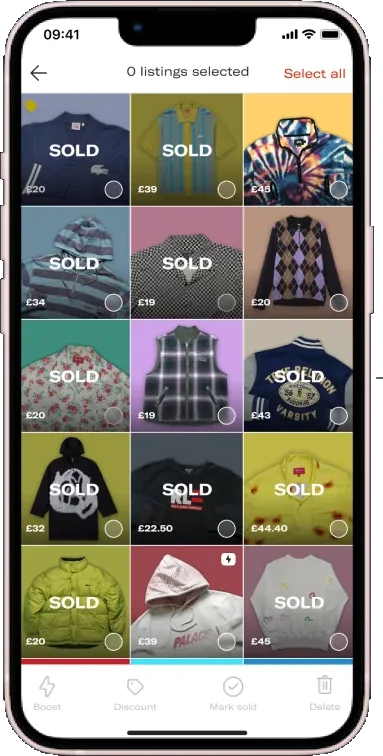
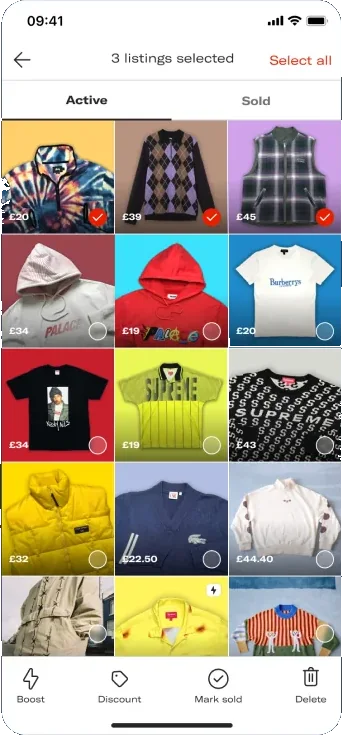
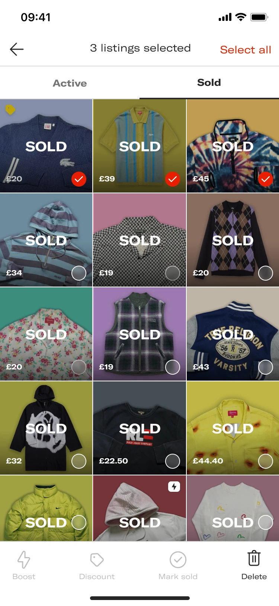
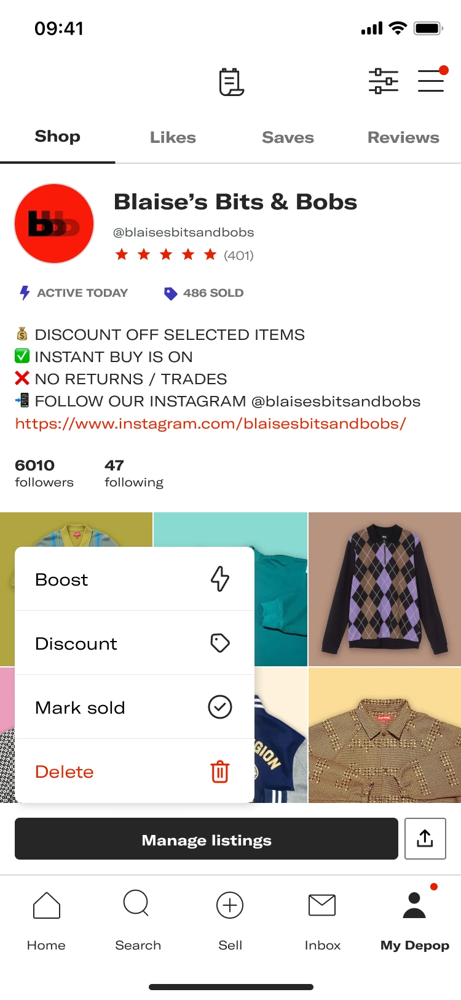
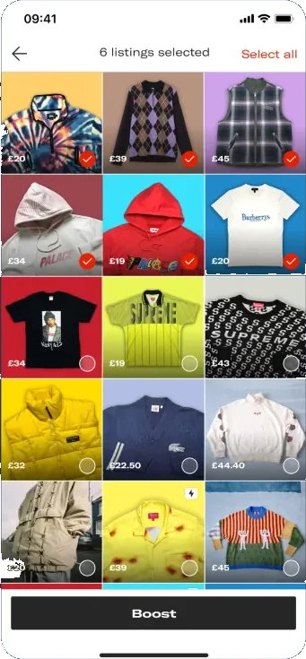
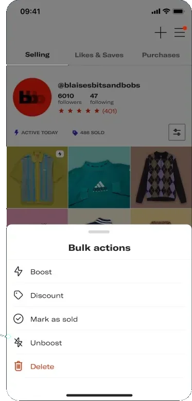
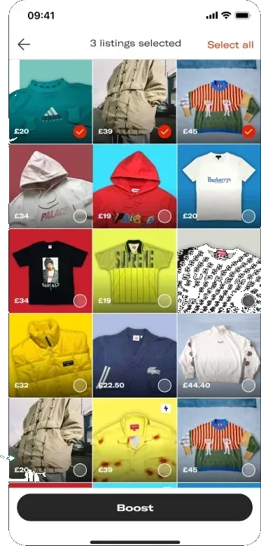

Seller Hub
A section of the Depop app that provides a dedicated home for all the information and key actions sellers need to run their shops successfully.
Depop · Marketplace · Mobile · 2024
After the Seller Hub was removed, Manage Listings had to become the place sellers boost, discount, and otherwise run a shop in bulk.

Boosting from the shop page 12% Jan 2024 to 30.5% May 2024
01
35% of products were previously bulk boosted from the seller hub page.
With the removal of the Seller Hub, sellers no longer have a central place to bulk manage their listings (Boost), which led to a decrease in Boost adoption.
Some context
A section of the Depop app that provides a dedicated home for all the information and key actions sellers need to run their shops successfully.
A promotional tool to help sellers promote their listings in search and reach more buyers by showing their listings to a wider audience.

Manage Listings
With the removal of the Seller Hub, the Manage Listing page became the new hub for sellers to bulk manage their listings.
The previous layout prioritized listings based on how they appeared on the seller’s profile, regardless of whether they were active listings or not.
Most shops on Depop for a while have sold at least 70% of their items.

02
As a seller, I want to quickly identify the relevant listings to my action (active and unboosted if I want to boost) to save time and increase sales.
As a seller, I want to discover all the available actions I can take to manage my listings in a clear and intuitive way.
How might we
How might we simplify navigation for sellers within the ‘Manage Listing’ page to ensure that they can easily discover boosted listings and other key actions?
Improve the discoverability of key actions like boosting, discounting, etc.
Make it easier for sellers to bulk manage their listings.
03
Concept A
Making it easy and fast for sellers to identify their active listing to manage.


Concept B
Making it easy for sellers to discover bulk management actions.


04
Sellers were asked how easy or difficult it was to boost a listing on each prototype. Each chart is 13 responses, from very difficult to very easy.
62% of sellers found this prototype very easy to use
1. How easy or difficult was it to ‘boost’ a listing on this prototype?
13 responses
85% of sellers found this prototype very easy to use
1. How easy or difficult was it to ‘boost’ a listing on this prototype?
13 responses
The notes call the stronger direction Prototype 2. That lines up with Concept B, the pop-up: it is the prototype 85% of sellers found very easy to use.
05
Copy
Before. Sellers don’t know they can bulk manage their listings using the Manage Listings feature.
After. Made it clearer that ‘Manage Listings’ is about bulk management of listings. On the shop, the button reads Bulk actions.
36% more sellers boosted from the shop page during the A/B test as a result of the improved UX copy.
Actions
Before. Sellers couldn’t discover all the available actions to manage their listings in a clear and intuitive way. Boost, Discount, Mark sold, and Delete sat on a bottom bar, under a grid of sold items.
After. Made it easier to discover actions for bulk management of listings. Bulk actions opens a sheet: Boost, Discount, Mark as sold, Unboost, and Delete.
+11% more sellers engaged with the manage listing action during the A/B test.

What opens first
Before. Sellers couldn’t discover all the available actions to manage their listings in a clear and intuitive way.
After. We automatically showed sellers their listings based on items that are unboosted and unsold.
+32% more sellers boosting their listings from the shop page during the A/B test as a result of the improved visibility of the actions.

06
Boosting from the shop page.
went from this
Jan 2024
to this
May 2024
The move is what the case study reports for boosting from the shop page between January and May 2024. The A/B results for copy, the action sheet, and the filtered list sit with each design above.